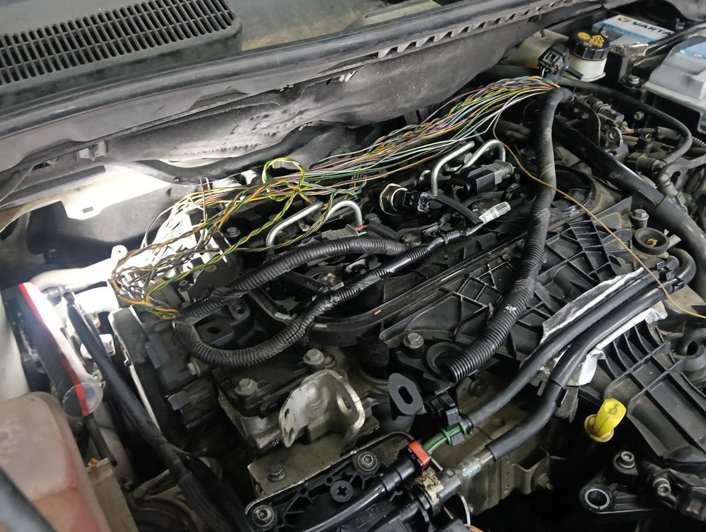
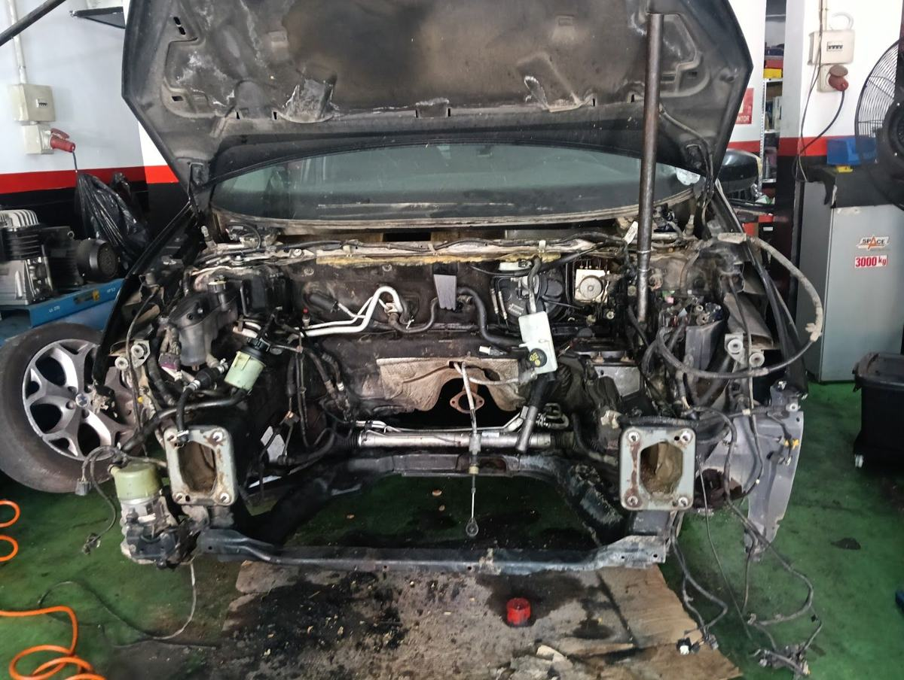

Averías que resolvemos
Conectamos la máquina, leemos el código y te explicamos qué significa en cristiano antes de tocar nada.
CódigoLo que notasLo que suele serEn el taller
P0301
El motor tiembla o tironea● localizado y reparado
Fallo de encendido en un cilindro: bujía, bobina o inyector.
P0171
Gasta más y pierde fuerza● localizado y reparado
Mezcla pobre: toma de aire, caudalímetro o sonda.

P0420
Testigo motor encendido● localizado y reparado
Catalizador por debajo de su rendimiento.

U0100
Se apaga o no arranca● localizado y reparado
La centralita no comunica: cableado, conectores o la propia centralita.